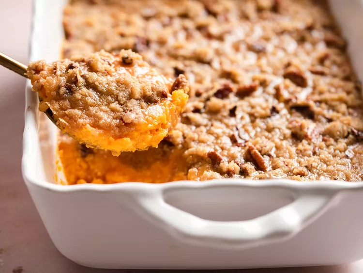

Yummy Sweet Potato Casserole

A traditional holiday table wouldn't be complete with a sweet potato casserole. Perfectly flavored and topped with an irresistible pecan topping, this is the only
sweet potato casserole recipe you'll ever need.
Ingredients
- 4 cups peeled, cubed sweet potatoes
- 2 large eggs, beaten
- 1/2 cup white sugar
- 1/2 cup milk
- 4 tablespoons butter, softened
- 1/2 teaspoons vanille extract
- 1/2 teaspoon salt
Directions
- Preheat oven to 325 degress F (165 degrees C)
- Prepare sweet potatoes:
Put sweet potatoes in a medium saucepan and cover with water.
Cook over medium-high heat until tender, 10 to 15 minutes. Drain and transfer to a large bowl
- Mash drained sweet potatoes with a fork. Add eggs; mix until well combined. Add sugar, milk, butter, vanilla, and salt; mix until smooth. Transfer to a 9x13-inch baking dish
- Make topping: Mix brown sugar and flour together in a medium bowl. Cut in butter with a pastry cutter until mixture is coarse and looks like peas; don't overmix. Stir in peacans. Sprinkle topping over sweet potato
- Bake in the preheated oven until topping is slightly browned, about 30 minutes
More Recipes
Back to Home